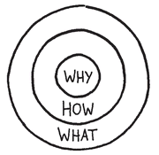

3
THE GOLDEN CIRCLE.

There are a few leaders who choose to inspire rather than manipulate in order to motivate people. Whether individuals or organizations, every single one of these inspiring leaders thinks, acts and communicates exactly the same way. And it’s the complete opposite of the rest of us. Consciously or not, how they do it is by following a naturally occurring pattern that I call The Golden Circle.
The concept of The Golden Circle was inspired by the golden ratio—a simple mathematical relationship that has fascinated mathematicians, biologists, architects, artists, musicians and naturists since the beginning of history. From the Egyptians to Pythagoras to Leonardo da Vinci, many have looked to the golden ratio to provide a mathematical formula for proportion and even beauty. It also supports the notion that there is more order in nature than we think, as in the symmetry of leaves and the geometric perfection of snowflakes.
What I found so attractive about the golden ratio, however, was that it had so many applications in so many fields. And even more significantly, it offered a formula that could produce repeatable and predictable results in places where such results might have been assumed to be a random occurrence or luck. Even Mother Nature—for most people a symbol of unpredictability—exhibited more order than we previously acknowledged. Like the golden ratio, which offers evidence of order in the seeming disorder of nature, The Golden Circle finds order and predictability in human behavior. Put simply, it helps us understand why we do what we do. The Golden Circle provides compelling evidence of how much more we can achieve if we remind ourselves to start everything we do by first asking why.
The Golden Circle is an alternative perspective to existing assumptions about why some leaders and organizations have achieved such a disproportionate degree of influence. It offers clear insight as to how Apple is able to innovate in so many diverse industries and never lose its ability to do so. It explains why people tattoo Harley-Davidson logos on their bodies. It provides a clearer understanding not just of how Southwest Airlines created the most profitable airline in history, but why the things it did worked. It even gives some clarity as to why people followed Dr. Martin Luther King Jr. in a movement that changed a nation and why we took up John F. Kennedy’s challenge to put a man on the moon even after he died. The Golden Circle shows how these leaders were able to inspire action instead of manipulating people to act.
This alternative perspective is not just useful for changing the world; there are practical applications for the ability to inspire, too. It can be used as a guide to vastly improving leadership, corporate culture, hiring, product development, sales, and marketing. It even explains loyalty and how to create enough momentum to turn an idea into a social movement.
And it all starts from the inside out. It all starts with Why.
Before we can explore its applications, let me first define the terms, starting from the outside of the circle and moving inward.
WHAT: Every single company and organization on the planet knows WHAT they do. This is true no matter how big or small, no matter what industry. Everyone is easily able to describe the products or services a company sells or the job function they have within that system. WHATs are easy to identify.
HOW: Some companies and people know HOW they do WHAT they do. Whether you call them a “differentiating value proposition,” “proprietary process” or “unique selling proposition,” HOWs are often given to explain how something is different or better. Not as obvious as WHATs, many think these are the differentiating or motivating factors in a decision. It would be false to assume that’s all that is required. There is one missing detail:
WHY: Very few people or companies can clearly articulate WHY they do WHAT they do. When I say WHY, I don’t mean to make money—that’s a result. By WHY I mean what is your purpose, cause or belief? WHY does your company exist? WHY do you get out of bed every morning? And WHY should anyone care?
When most organizations or people think, act or communicate they do so from the outside in, from WHAT to WHY. And for good reason—they go from clearest thing to the fuzziest thing. We say WHAT we do, we sometimes say HOW we do it, but we rarely say WHY we do WHAT we do.
But not the inspired companies. Not the inspired leaders. Every single one of them, regardless of their size or their industry, thinks, acts and communicates from the inside out.
I use Apple Inc. frequently as an example simply because they have broad recognition and their products are easy to grasp and compare to others. What’s more, Apple’s success over time is not typical. Their ability to remain one of the most innovative companies year after year, combined with their uncanny ability to attract a cultlike following, makes them a great example to demonstrate many of the principles of The Golden Circle.
I’ll start with a simple marketing example.
If Apple were like most other companies, a marketing message from them would move from the outside in of The Golden Circle. It would start with some statement of WHAT the company does or makes, followed by HOW they think they are different or better than the competition, followed by some call to action. With that, the company would expect some behavior in return, in this case a purchase. A marketing message from Apple, if they were like everyone else, might sound like this:
We make great computers.
They’re beautifully designed, simple to use and user-friendly.
Wanna buy one?
It’s not a very compelling sales pitch, but that’s how most companies sell to us. This is the norm. First they start with WHAT they do—“Here’s our new car.” Then they tell us how they do it or how they are better—“It’s got leather seats, great gas mileage, and great financing.” And then they make a call to action and expect a behavior.
You see this pattern in business-to-consumer markets as well as business-to-business environments: “Here’s our law firm. Our lawyers went to the best schools and we represent the biggest clients. Hire us.” This pattern is also alive and well in politics—“Here’s the candidate, here are her views on taxes and immigration. See how’s she’s different? Vote for her.” In every case, the communication is organized in an attempt to convince someone of a difference or superior value.
But that is not what the inspiring leaders and organizations do. Every one of them, regardless of size or industry, thinks, acts and communicates from the inside out.
Let’s look at that Apple example again and rewrite the example in the order Apple actually communicates. This time, the example starts with WHY.
Everything we do, we believe in challenging the status quo. We believe in thinking differently.
The way we challenge the status quo is by making our products beautifully designed, simple to use and user-friendly.
And we happen to make great computers.
Wanna buy one?
It’s a completely different message. It actually feels different from the first one. We’re much more eager to buy a computer from Apple after reading the second version—and all I did was reverse the order of the information. There’s no trickery, no manipulation, no free stuff, no aspirational messages, no celebrities.
Apple doesn’t simply reverse the order of information, their message starts with WHY, a purpose, cause or belief that has nothing to do with WHAT they do. WHAT they do—the products they make, from computers to small electronics—no longer serves as the reason to buy, they serve as the tangible proof of their cause. The design and user interface of Apple products, though important, are not enough in themselves to generate such astounding loyalty among their customers. Those important elements help make the cause tangible and rational. Others can hire top designers and brilliant engineers and make beautiful, easy-to-use products and copy the things Apple does, and they could even steal away Apple employees to do it, but the results would not be the same. Simply copying WHAT Apple does or HOW it does it won’t work. There is something more, something hard to describe and near impossible to copy that gives Apple such a disproportionate level of influence in the market. The example starts to prove that people don’t buy WHAT you do, they buy WHY you do it.
It’s worth repeating: people don’t buy WHAT you do, they buy WHY you do it.
Apple’s ability to design such innovative products so consistently and their ability to command such astounding loyalty for their products comes from more than simply WHAT they do. The problem is, organizations use the tangible features and benefits to build a rational argument for why their company, product or idea is better than another. Sometimes those comparisons are made outright and sometimes analogies or metaphors are drawn, but the effect is the same. Companies try to sell us WHAT they do, but we buy WHY they do it. This is what I mean when I say they communicate from the outside in; they lead with WHAT and HOW.
When communicating from the inside out, however, the WHY is offered as the reason to buy and the WHATs serve as the tangible proof of that belief. The things we can point to rationalize or explain the reasons we’re drawn to one product, company or idea over another.
WHAT companies do are external factors, but WHY they do it is something deeper. In practical terms, there is nothing special about Apple. It is just a company like any other. There is no real difference between Apple and any of its competitors—Dell, HP, Gateway, Toshiba. Pick one, it doesn’t matter. They are all corporate structures. That’s all a company is. It’s a structure. They all make computers. They all have some systems that work and some that don’t. They all have equal access to the same talent, the same resources, the same agencies, the same consultants and the same media. They all have some good managers, some good designers and smart engineers. They all make some products that work well and some that don’t . . . even Apple. Why, then, does Apple have such a disproportionate level of success? Why are they more innovative? Why are they consistently more profitable? And how did they manage to build such a cultish loyal following—something very few companies are ever able to achieve?
People don’t buy WHAT you do, they buy WHY you do it. This is the reason Apple has earned a remarkable level of flexibility. People are obviously comfortable buying a computer from Apple. But people are also perfectly comfortable buying an mp3 player from them, or a cell phone or a DVR. Consumers and investors are completely at ease with Apple offering so many different products in so many different categories. It’s not WHAT Apple does that distinguishes them. It is WHY they do it. Their products give life to their cause.
I’m not so foolhardy as to propose that their products don’t matter; of course they do. But it’s the reason they matter that is contrary to the conventional wisdom. Their products, unto themselves, are not the reason Apple is perceived as superior; their products, WHAT Apple makes, serve as the tangible proof of what they believe. It is that clear correlation between WHAT they do and WHY they do it that makes Apple stand out. This is the reason we perceive Apple as being authentic. Everything they do works to demonstrate their WHY, to challenge the status quo. Regardless of the products they make or industry in which they operate, it is always clear that Apple “thinks different.”
When Apple first came out with the Macintosh, having an operating system based on a graphical user interface and not a complicated computer language challenged how computers worked at the time. What’s more, where most technology companies saw their biggest marketing opportunity among businesses, Apple wanted to give an individual sitting at home the same power as any company. Apple’s WHY, to challenge the status quo and to empower the individual, is a pattern in that it repeats in all they say and do. It comes to life in their iPod and even more so in iTunes, a service that challenged the status quo of the music industry’s distribution model and was better suited to how individuals consumed music.
The music industry was organized to sell albums, a model that evolved during a time when listening to music was largely an activity we did at home. Sony changed that in 1979 with the introduction of the Walkman. But even the Walkman, and later the Discman, was limited to the number of cassette tapes or CDs you could carry in addition to the device. The development of the mp3 music format changed all that. Digital compression allowed for a very high quantity of songs to be stored on relatively inexpensive and highly portable digital music devices. Our ability to walk out of the house with only one easy-to-carry device transformed music into something we largely listened to away from home. And the mp3 not only changed where we listened to music, it also transformed us from an album-collecting culture to a song-collecting culture. While the music industry was still busy trying to sell us albums, a model that no longer suited consumer behavior, Apple introduced their iPod by offering us “1,000 songs in your pocket.” With the iPod and iTunes, Apple did a much better job of communicating the value of both the mp3 and the mp3 player relative to how we lived our lives. Their advertising didn’t offer exhaustive descriptions of product details; it wasn’t about them, it was about us. And we understood WHY we wanted it.
Apple did not invent the mp3, nor did they invent the technology that became the iPod, yet they are credited with transforming the music industry with it. The multigigabyte portable hard drive music player was actually invented by Creative Technology Ltd., a Singapore-based technology company that rose to prominence by making the Sound Blaster audio technology that enables home PCs to have sound. In fact, Apple didn’t introduce the iPod until twenty-two months after Creative’s entry into the market. This detail alone calls into question the assumption of a first mover’s advantage. Given their history in digital sound, Creative was more qualified than Apple to introduce a digital music product. The problem was, they advertised their product as a “5GB mp3 player.” It is exactly the same message as Apple’s “1,000 songs in your pocket.” The difference is Creative told us WHAT their product was and Apple told us WHY we needed it.
Only later, once we decided we had to have an iPod, did the WHAT matter—and we chose the 5GB version, 10GB version, and so on, the tangible details that proved we could get the 1,000 songs in our pocket. Our decision started with WHY, and so did Apple’s offering.
How many of us can say with certainty that, indeed, an iPod is actually better than Creative’s Zen? iPods, for example, are still plagued with battery life and battery replacement issues. They tend to just die. Maybe a Zen is better. The reality is, we don’t even care if it is. People don’t buy WHAT you do, they buy WHY you do it. And it is Apple’s clarity of WHY that gives them such a remarkable ability to innovate, often competing against companies seemingly more qualified than they, and succeed in industries outside their core business.
The same cannot be said for companies with a fuzzy sense of WHY. When an organization defines itself by WHAT it does, that’s all it will ever be able to do. Apple’s competitors, having defined themselves by their products or services, regardless of their “differentiating value proposition,” are not afforded the same freedom. Gateway, for example, started selling flat-screen TVs in 2003. Having made flat-screen monitors for years, they were every bit as qualified to make and sell TVs. But the company failed to make a credible name for itself among consumer electronics brands and gave up the business two years later to focus on its “core business.” Dell came out with PDAs in 2002 and mp3 players in 2003, but lasted only a few years in each market. Dell makes good-quality products and is fully qualified to produce these other technologies. The problem was they had defined themselves by WHAT they did; they made computers, and it simply didn’t make sense to us to buy a PDA or mp3 player from them. It didn’t feel right. How many people do you think would stand on line for six hours to buy a new cell phone from Dell, as they did for the release of Apple’s iPhone? People couldn’t see Dell as anything more than a computer company. It just didn’t make sense. Poor sales quickly ended Dell’s desire to enter the small electronic goods market; instead they opted to “focus on their core business.” Unless Dell, like so many others, can rediscover their founding purpose, cause or belief and start with WHY in all they say and do, all they will ever do is sell computers. They will be stuck in their “core business.”
Apple, unlike its competitors, has defined itself by WHY it does things, not WHAT it does. It is not a computer company, but a company that challenges the status quo and offers individuals simpler alternatives. Apple even changed its legal name in 2007 from Apple Computer, Inc. to Apple Inc. to reflect the fact that they were more than just a computer company. Practically speaking, it doesn’t really matter what a company’s legal name is. For Apple, however, having the word “Computer” in their name didn’t limit WHAT they could do. It limited how they thought of themselves. The change wasn’t practical, it was philosophical.
Apple’s WHY was formed at its founding in the late 1970s and hasn’t changed to this date. Regardless of the products they make or the industries into which they migrate, their WHY still remains a constant. And Apple’s intention to challenge accepted thinking has proved prophetic. As a computer company they redirected the course of the personal computing industry. As a small electronics company they have challenged the traditional dominance of companies like Sony and Philips. As a purveyor of mobile phones they pushed the old hands—Motorola, Ericsson, and Nokia—to reexamine their own businesses. Apple’s ability to enter and even dominate so many different industries has even challenged what it means to be a computer company in the first place. Regardless of WHAT it does, we know WHY Apple exists.
The same cannot be said for their competitors. Although they all had a clear sense of WHY at some point—it was one of the primary factors that helped each of them become billion-dollar companies—over the course of time, all of Apple’s competitors lost their WHY. Now all those companies define themselves by WHAT they do: we make computers. They turned from companies with a cause into companies that sold products. And when that happens, price, quality, service and features become the primary currency to motivate a purchase decision. At that point a company and its products have ostensibly become commodities. As any company forced to compete on price, quality, service or features alone can attest, it is very hard to differentiate for any period of time or build loyalty on those factors alone. Plus it costs money and is stressful waking up every day trying to compete on that level alone. Knowing WHY is essential for lasting success and the ability to avoid being lumped in with others.
Any company faced with the challenge of how to differentiate themselves in their market is basically a commodity, regardless of WHAT they do or HOW they do it. Ask a milk producer, for example, and they will tell you that there are actually variations among milk brands. The problem is you have to be an expert to understand the differences. To the outside world, all milk is basically the same, so we just lump all the brands together and call it a commodity. In response, that’s how the industry acts. This is largely the pattern for almost every other product or service on the market today, business-to-consumer or business-to-business. They focus on WHAT they do and HOW they do it without consideration of WHY; we lump them together and they act like commodities. The more we treat them like commodities, the more they focus on WHAT and HOW they do it. It’s a vicious cycle. But only companies that act like commodities are the ones who wake up every day with the challenge of how to differentiate. Companies and organizations with a clear sense of WHY never worry about it. They don’t think of themselves as being like anyone else and they don’t have to “convince” anyone of their value. They don’t need complex systems of carrots and sticks. They are different, and everyone knows it. They start with WHY in everything they say and do.
There are those who still believe that Apple’s difference comes from its marketing ability. Apple “sells a lifestyle,” marketing professionals will tell you. Then how come these marketing professionals haven’t intentionally repeated Apple’s success and longevity for another company? Calling it a “lifestyle” is a recognition that people who live a certain way choose to incorporate Apple into their lives. Apple didn’t invent the lifestyle, nor does it sell a lifestyle. Apple is simply one of the brands that those who live a certain lifestyle are drawn to. Those people use certain products or brands in the course of living in that lifestyle; that is, in part, how we recognize their way of life in the first place. The products they choose become proof of WHY they do the things they do. It is only because Apple’s WHY is so clear that those who believe what they believe are drawn to them. As Harley-Davidson fits into the lifestyle of a certain group of people and Prada shoes fit the lifestyle of another group, it is the lifestyle that came first. Like the products the company produces that serve as proof of the company’s WHY, so too does a brand or product serve as proof of an individual’s WHY.
Others, even some who work for Apple, will say that what truly distinguishes Apple is in fact the quality of their products alone. Having good-quality products is of course important. No matter how clear your WHY, if WHAT you sell doesn’t work, the whole thing falls flat. But a company doesn’t need to have the best products, they just need to be good or very good. Better or best is a relative comparison. Without first understanding WHY, the comparison itself is of no value to the decision maker.
The concept of “better” begs the question: based on what standard? Is a Ferrari F430 sports car better than a Honda Odyssey minivan? It depends why you need the car. If you have a family of six, a two-seater Ferrari is not better. However, if you’re looking for a great way to meet women, a Honda minivan is probably not better (depending on what kind of woman you’re looking to meet, I guess; I too shouldn’t make assumptions). Why the product exists must first be considered and why someone wants it must match. I could tell you about all the engineering marvels of the Honda Odyssey, some of which may actually be better than a Ferrari. It certainly gets better gas mileage. The odds are that I’m not going to convince someone who really wants that sports car to buy anything else. That some people are viscerally drawn to a Ferrari more than a Honda Odyssey says more about the person than the engineering of the product. The engineering, for example, would simply be one of the tangible points that a Ferrari lover could point out to prove how he feels about the car. The dogged defense of the superiority of the Ferrari from the person whose personality is predisposed to favor all the features and benefits of a Ferrari cannot be an objective conversation. Why do you think most people who buy Ferraris are willing to pay a premium to get it in red whereas most who buy Honda Odysseys probably don’t care much about the color at all?
For all those who will try to convince you that Apple computers are just better, I cannot dispute a single claim. All I can offer is that most of the factors that they believe make them better meet their standard of what a computer should do. With that in mind, Macintoshes are, in practice, only better for those who believe what Apple believes. Those people who share Apple’s WHY believe that Apple’s products are objectively better, and any attempt to convince them otherwise is pointless. Even with objective metrics in hand, the argument about which is better or which is worse without first establishing a common standard creates nothing more than debate. Loyalists for each brand will point to various features and benefits that matter to them (or don’t matter to them) in an attempt to convince the other that they are right. And that’s one of the primary reasons why so many companies feel the need to differentiate in the first place—based on the flawed assumption that only one group can be right. But what if both parties were right? What if an Apple was right for some people and a PC was right for others? It’s not a debate about better or worse anymore, it’s a discussion about different needs. And before the discussion can even happen, the WHYs for each must be established first.
A simple claim of better, even with the rational evidence to back it up, can create desire and even motivate a decision to buy, but it doesn’t create loyalty. If a customer feels inspired to buy a product, rather than manipulated, they will be able to verbalize the reasons why they think what they bought is better. Good quality and features matter, but they are not enough to produce the dogged loyalty that all the most inspiring leaders and companies are able to command. It is the cause that is represented by the company, brand, product or person that inspires loyalty.